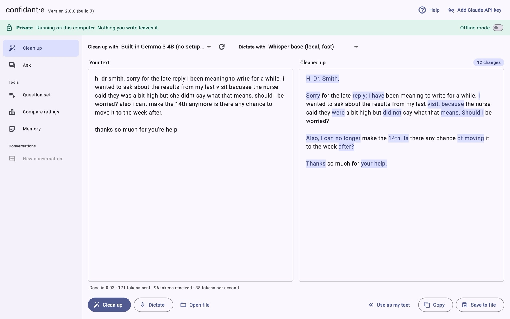
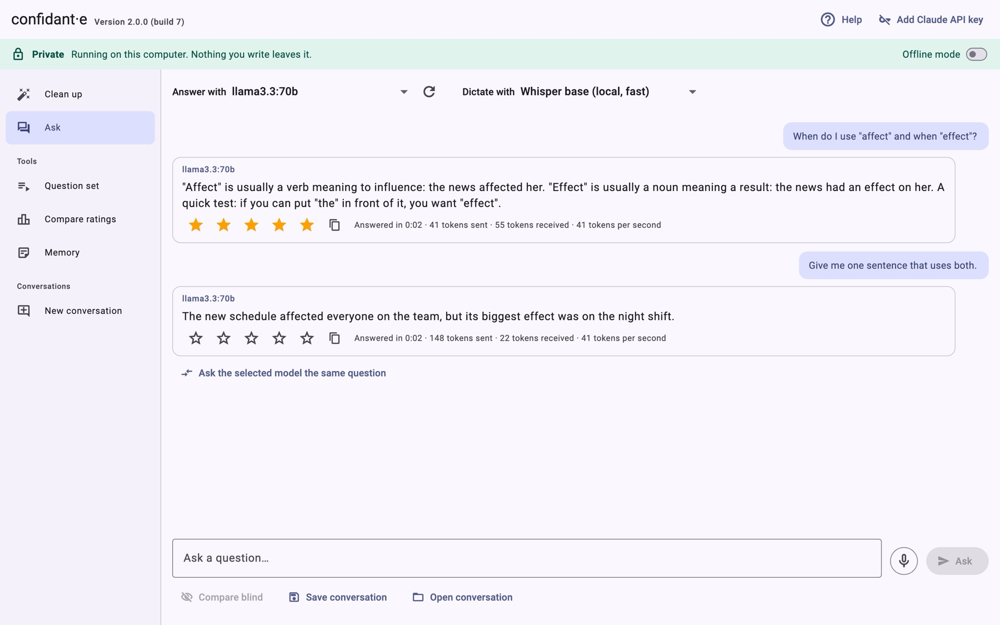
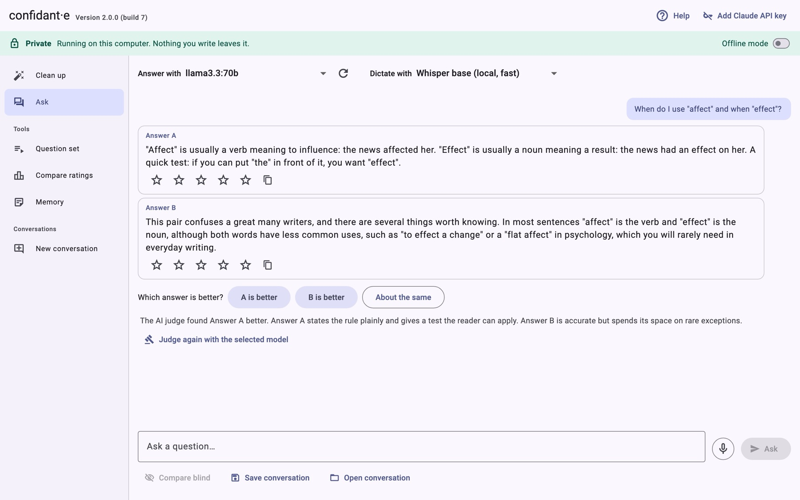
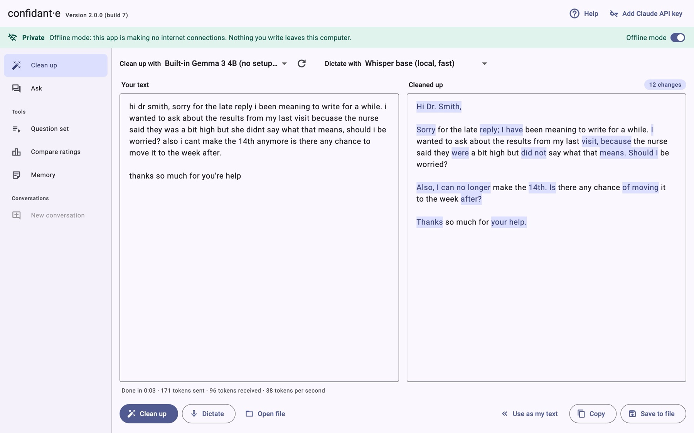

confidant·e helps you write and answers your questions with an AI that runs on your computer. What you type stays with you.
Coming to the Mac App Store.

A bar across the top of the app says it plainly, and changes the moment you choose a different AI.
For the letter to your doctor, the note about a client, the question you would not type into a website.
Paste or dictate rough text and get a clean version beside it, with every change shaded so you can see what was done.
Hold a conversation with the AI you choose. Earlier conversations stay on your Mac, ready to pick up again.
Speak and the words appear. With Whisper, your voice is recognised on your Mac and goes nowhere.
Put one question to two AIs with the names hidden, pick the better answer, and see which wins on your own questions.
Notes that carry from one conversation to the next. You read, edit and approve them before anything is kept.
One switch, and the app makes no internet connections at all. The AIs on your Mac carry on working.



Nader Amir on what confidant·e is and why he uses it. About three and a half minutes.
A small AI is good at tidying your writing. To get close to a commercial AI in private, you need a large model and a Mac with the memory to hold it.
A Mac with macOS 14, 16 GB of memory and 2.5 GB of free space. One download, nothing else to install.
The free Ollama app and more memory: 32 to 64 GB for mid-sized models, 128 GB recommended for the most powerful.
Your own Anthropic API key for Claude. Optional, and never chosen for you.